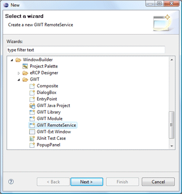
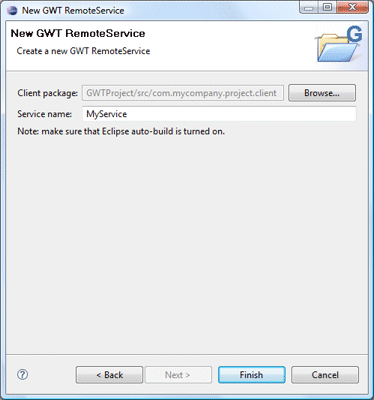
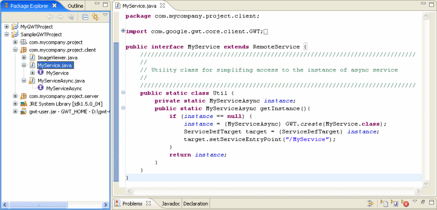
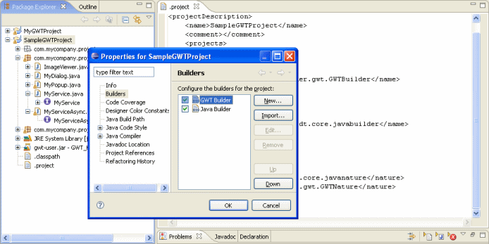
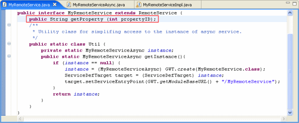
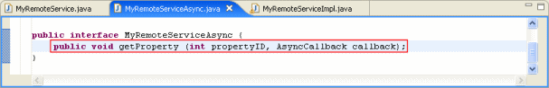
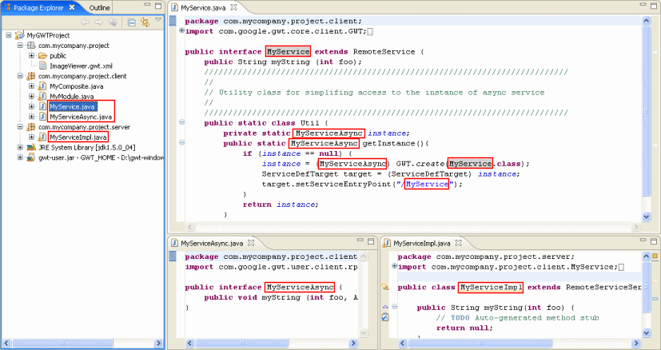
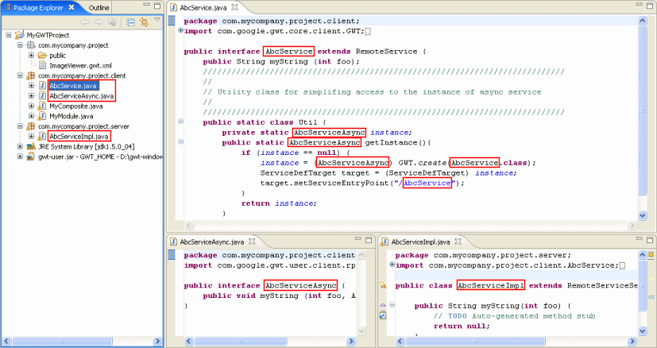
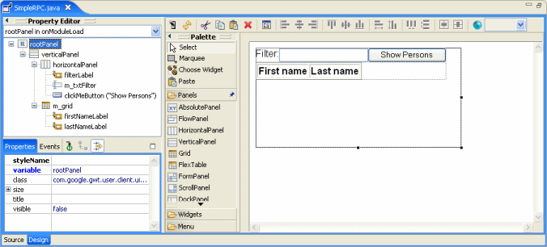
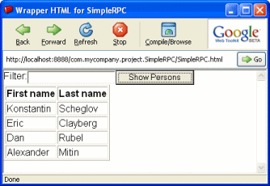

To use the wizard, select the client package to contain the RemoteService. Then enter the service name and hit the Finish button.
- Service class must be created in module client package
- Select the client package when invoking this wizard
- Care must be taken when referencing a RemoteService at design time
- RemoteServices can be used to easily create simple RPC applications
 
Async part automatically created by GWT
Project nature and builder.

GWT nature and builder automatically created during GWT Project creation.

Adding a method to the remote service interface class will automatically add the appropriate method to the matching *Async and *Impl classes.


Renaming or moving a remote service class renames the *Async and *Impl classes and servlet entry in the in module XML file.

The following is a simple example of RPC communication using Remote Services.


Person is the simple domain class used in the example. Note that it must be marked as serializable via the IsSerializable interface.
- package
com.mycompany.project.client;
import com.google.gwt.user.client.rpc.IsSerializable;
public class Person implements IsSerializable {
private String m_firstName;
private String m_lastName;
public Person() {
}
public Person(String firstName, String lastName) {
m_firstName = firstName;
m_lastName = lastName;
}
public String getFirstName() {
return m_firstName;
}
public String getLastName() {
return m_lastName;
}
public void setFirstName(String firstName) {
m_firstName = firstName;
}
public void setLastName(String lastName) {
m_lastName = lastName;
}
}
PersonsService is a RemoteService interface that defines a single method, getPersons(), that returns a list of Person objects from the server based on filter pattern that is passed in.
- package
com.mycompany.project.client;
import java.util.List;
import com.google.gwt.core.client.GWT;
import com.google.gwt.user.client.rpc.RemoteService;
import com.google.gwt.user.client.rpc.ServiceDefTarget;
public interface PersonsService extends RemoteService {
/**
* @param pattern the pettern to search
* @return the {@link List} of {@link Person} that have given pattern in its first/last names.
*/
List getPersons(String pattern);
/**
* Utility class for simplifying access to the instance of async service.
*/
public static class Util {
private static PersonsServiceAsync instance;
public static PersonsServiceAsync getInstance(){
if (instance == null) {
instance = (PersonsServiceAsync) GWT.create(PersonsService.class);
ServiceDefTarget target = (ServiceDefTarget) instance;
target.setServiceEntryPoint(GWT.getModuleBaseURL() + "/PersonsService");
}
return instance;
}
}
}
PersonsServiceAsync is an auto-generated class that facilitates communication with the server.
- package
com.mycompany.project.client;
import java.util.List;
import com.google.gwt.user.client.rpc.AsyncCallback;
public interface PersonsServiceAsync {
/**
* @param pattern the pettern to search
* @return the {@link List} of {@link Person} that have given pattern in its first/last names.
*/
void getPersons(String pattern, AsyncCallback callback);
}
PersonsServiceImpl is the server side class that implements the actual logic of returning the list of customers based on the passed in pattern
- package
com.mycompany.project.server;
import java.util.ArrayList;
import java.util.List;
import com.google.gwt.user.server.rpc.RemoteServiceServlet;
import com.mycompany.project.client.Person;
import com.mycompany.project.client.PersonsService;
public class PersonsServiceImpl extends RemoteServiceServlet implements PersonsService {
private static final Person[] allPersons = new Person[]{
new Person("Konstantin", "Scheglov"),
new Person("Eric", "Clayberg"),
new Person("Dan", "Rubel"),
new Person("Alexander", "Mitin")};
public List getPersons(String pattern) {
List persons = new ArrayList();
for (int i = 0; i < allPersons.length; i++) {
Person person = allPersons[i];
if (person.getFirstName().indexOf(pattern) != -1 -
|| person.getLastName().indexOf(pattern) != -1) {
persons.add(person);
}
}
return persons;
}
}
SimpleRPC is the GWT GUI class that implements the user interface. The user can enter a filter and click the Show Persons button to retrieve a list of Person objects from the server.
- package
com.mycompany.project.client;
import java.util.Iterator;
import java.util.List;
import com.google.gwt.core.client.EntryPoint;
import com.google.gwt.user.client.rpc.AsyncCallback;
import com.google.gwt.user.client.ui.*;
/**
* Entry point classes define <code>onModuleLoad()</code>.
*/
public class SimpleRPC implements EntryPoint {
private TextBox m_txtFilter;
private Grid m_grid;
private Button clickMeButton;
public void onModuleLoad() {
RootPanel rootPanel = RootPanel.get();
{
final Label filterLabel = new Label("Filter:");
rootPanel.add(filterLabel, 10, 10);
}
{
m_txtFilter = new TextBox();
rootPanel.add(m_txtFilter, 84, 16);
}
//
clickMeButton = new Button();
rootPanel.add(clickMeButton, 261, 12);
clickMeButton.setText("Show Persons");
clickMeButton.addClickListener(new ClickListener() {
public void onClick(Widget sender) {
fillPersons();
}
});
{
m_grid = new Grid();
rootPanel.add(m_grid, 19, 70);
m_grid.setBorderWidth(1);
m_grid.resize(1, 2);
{
final Label firstNameLabel = new Label("First name");
m_grid.setWidget(0, 0, firstNameLabel);
firstNameLabel.setStyleName("simple-personHeader");
}
{
final Label lastNameLabel = new Label("Last name");
m_grid.setWidget(0, 1, lastNameLabel);
lastNameLabel.setStyleName("simple-personHeader");
}
}
}
private void fillPersons() {
PersonsService.Util.getInstance().getPersons(m_txtFilter.getText(),
new AsyncCallback() {
public void onSuccess(Object result) {
List persons = (List) result;
m_grid.resize(1 + persons.size(), 2);
int row = 1;
for (Iterator I = persons.iterator(); I.hasNext();row++) {
Person person = (Person) I.next();
m_grid.setWidget(row, 0, new Label(person.getFirstName()));
m_grid.setWidget(row, 1, new Label(person.getLastName()));
}
}
public void onFailure(Throwable caught) {
}
});
}
}
Note on using Remote Services at design time:
Remote Services are runtime-only components and care must be taken when trying to use them at design time in a Composite class. GWT.create(MyService.class) needs to create an instance of the class that should invoke the RemoteService implementation on the application server. During design time the application server isn't running so this doesn't work. That means that code like the following will fail, if you try to use the custom Composite within another window at design time:
- public class MyComposite extends
Composite {
public MyComposite() {
final AbsolutePanel absolutePanel = new AbsolutePanel();
initWidget(absolutePanel);
final Button button = new Button();
absolutePanel.add(button, 30, 34);
button.setText("New Button");
MyServiceAsync service = MyService.Util.getInstance(); // this line will fail
// do something with MyService
}
}
At design time, you will see an exception like the following:
- java.lang.NoSuchMethodException:
com.mycompany.module.client.MyService.<init>()
at java.lang.Class.getConstructor0(Class.java:2678)
at java.lang.Class.getDeclaredConstructor(Class.java:1953)
at com.google.gwt.core.client.GWT.create(Unknown Source)
The fix is to wrapper the RemoteService instantiation reference in an isDesignTime() check like this:
- public class MyComposite extends
Composite {
public MyComposite() {
final AbsolutePanel absolutePanel = new AbsolutePanel();
initWidget(absolutePanel);
final Button button = new Button();
absolutePanel.add(button, 30, 34);
button.setText("New Button");
if (!isDesignTime()) { // or !Beans.isDesignTime() in GWT 2.4 or higher
MyServiceAsync service = MyService.Util.getInstance();
// do something with MyService
}
}
// Implement the following method exactly as-is
private static final boolean isDesignTime() {
return Beans.isDesignTime(); // GWT 2.4 and above
// return false // GWT 2.2 and earlier
}
}
Make sure to also implement the isDesignTime() method exactly as shown. Return false for GWT 2.2 or earlier or Beans.isDesignTime() for GWT 2.4 and above. At design time, GWT Designer will then replace the "return false;" with "return true;" during class loading (it will compile normally and be ignored at runtime).